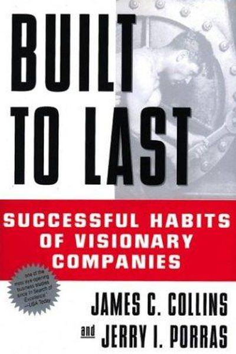

Library › Business & Startups
Built to Last — Summary & Key Lessons

Successful habits of visionary companies — the classic study of what makes companies great for decades, not quarters.
📖 OPEN THE FULL INTERACTIVE BREAKDOWN →🌐 Read it in Hindi, Hinglish, Gujarati, Tamil & 22 more languages — free, with audio.
💡 The Big Idea
Collins and Porras studied 18 'visionary' companies (that outperformed 50+ years) vs their peers. The findings: visionary companies are driven by a core ideology (values + purpose) that never changes, big hairy audacious goals (BHAGs) that stretch the company, cult-like cultures, and leaders who are clock-builders — they build organizations that thrive beyond them. Profit is a means, not the mission.
🧠 The 5 Key Lessons
Lesson 1: Clock-Building, Not Time-Telling
The Best of the Best
Great leaders build organizations that can thrive without them — the clock — rather than being the genius who tells the time. Time-tellers create dependency; clock-builders create institutions. The test: does the company get better or worse when the founder leaves?
📖 Example: Henry Ford was a time-teller (the company stumbled after him); the early HP founders were clock-builders (the company kept compounding for decades). The clock survives the clockmaker. Read the full example →
⚡ Do this: Build one system this week that works without you: a process, a checklist, a documented decision. That's your first clock-gear.
Lesson 2: Core Ideology: The Untouchable Identity
Core Ideology
Visionary companies have a core ideology — values and purpose — that stays fixed for decades while everything else changes. The ideology is the 'why we exist' that survives strategy shifts, CEOs and products. Companies without one drift with every trend.
📖 Example: 3M's 'never kill a new product idea' and HP's 'The HP Way' survived half a century of radical change. The ideology wasn't a slogan on the wall; it shaped hiring, money and decisions. Read the full example →
⚡ Do this: Write your core ideology in one line: 'We exist to ___, and we will never compromise ___.' Post it where you work.
Lesson 3: BHAGs: Big Hairy Audacious Goals
BHAGs
Visionary companies set goals so big they're slightly scary — putting a man on the moon, becoming the company 'most known for' something. A BHAG is clear, compelling and risky; it focuses the whole organization for 10-30 years. Small goals produce small companies.
📖 Example: Boeing's 1950s BHAG: 'Build the first commercial jet airliner' — a decade-long bet that defined the industry. Nike's early BHAG: crush Adidas. Both focused enormous effort on one audacious target. Read the full example →
⚡ Do this: Write a 10-year BHAG for yourself or your work: one sentence, big enough that saying it out loud feels slightly uncomfortable.
Lesson 4: Cult-Like Cultures
Cult-Like Cultures
Visionary companies are so clear about who fits that they feel cult-like: intense onboarding, strong values, and a willingness to reject brilliant people who don't fit. This isn't brainwashing — it's alignment. When everyone shares the ideology, trust and speed multiply.
📖 Example: The authors note IBM's 'IBM-ers' and Nordstrom's rule-book-replacement 'use your good judgment' — cultures so strong they self-select the right people and eject the wrong ones quickly. Read the full example →
⚡ Do this: Write your personal 'fit test': 3 values you won't compromise in a team or partner. Start saying no to mismatches — fast.
Lesson 5: Try a Lot of Stuff, Keep What Works
Home-Grown Evolution
Visionary companies don't succeed from one perfect plan — they succeed from rapid experimentation: try lots of things, keep what works, kill what doesn't. The authors call it 'evolutionary progress' — like biological mutation, most attempts fail quietly, and a few become breakthroughs.
📖 Example: 3M's Post-it came from a failed adhesive; Sony's path to the Walkman was a chain of accidental discoveries kept alive by a culture that allowed experiments. The plan was the process, not the product. Read the full example →
⚡ Do this: Run one cheap experiment this week: try a new approach, channel or idea for 7 days with no attachment. Keep it if it wins.
✅ 5-Step Action Plan
- Build one system that works without you.
- Write your core ideology in one line.
- Set one 10-year BHAG — say it out loud.
- Write your 3-value fit test and enforce it.
- Run one no-attachment experiment this week.
💬 Best Quotes from Built to Last
- “It is better to understand the clock than to tell the time.”
- “Big Hairy Audacious Goals — clear, compelling, and risky — are a powerful mechanism to stimulate progress.”
- “Visionary companies pursue a cluster of objectives, of which making money is only one — and not necessarily the primary one.”
Interactive version: mark lessons as read, listen in your language, share quote cards.